Adaptive Concept Bottleneck for Foundation Models
Under Distribution Shifts
Abstract
Advancements in foundation models (FMs) have led to a paradigm shift in machine learning. The rich, expressive feature representations from these pre-trained, large-scale FMs are leveraged for multiple downstream tasks, usually via lightweight fine-tuning of a shallow fully-connected network following the representation. However, the non-interpretable, black-box nature of this prediction pipeline can be a challenge, especially in critical domains such as healthcare, finance, and security. In this paper, we explore the potential of Concept Bottleneck Models (CBMs) for transforming complex, non-interpretable foundation models into interpretable decision-making pipelines using high-level concept vectors. Specifically, we focus on the test-time deployment of such an interpretable CBM pipeline “in the wild”, where the input distribution often shifts from the original training distribution. We first identify the potential failure modes of such a pipeline under different types of distribution shifts. Then we propose an adaptive concept bottleneck framework to address these failure modes, that dynamically adapts the concept-vector bank and the prediction layer based solely on unlabeled data from the target domain, without access to the source (training) dataset. Empirical evaluations with various real-world distribution shifts show that our adaptation method produces concept-based interpretations better aligned with the test data and boosts post-deployment accuracy by up to 28%, aligning the CBM performance with that of non-interpretable classification.
1 Introduction
Foundation Models (FMs), trained on vast data, are powerful feature extractors applicable across diverse distributions and downstream tasks (Bommasani et al., 2021; Rombach et al., 2022). They can be applied to classification tasks off-the-shelf via zero-shot prediction, or via linear probing using task-specific fine-tuning data (Kumar et al., 2022; Radford et al., 2021). Despite these strong advantages, foundation model-based systems often operate as inscrutable black-boxes, presenting a barrier to user trust and wider deployment in safety-critical settings. Another challenge faced in the standard deployment of FM-based deep classifiers is their vulnerability to distribution shifts at test time caused e.g., due to environmental changes, which can cause a drop in performance (Bommasani et al., 2021). This is particularly challenging in high-stakes domains such as healthcare (AlBadawy et al., 2018; Eslami et al., 2023), autonomous driving (Yu et al., 2020), and finance (Wu et al., 2023a).
In this work, we address these challenges by developing an interpretable classification framework that enjoys the rich, expressive feature representations of FMs, while also having enhanced robustness towards distribution shifts at test time. To tackle interpretability, we utilize Concept Bottleneck Models (CBMs) (Koh et al., 2020), transforming FM-based classifiers into interpretable, concept-based prediction pipelines. With the rapid advancements in FMs, there is strong opportunity to utilize them as powerful backbones, providing robust feature representations from which high-quality concepts can be extracted. Unlike early CBM approaches that required expensive concept annotations, recent advances show potential for constructing concept bottlenecks without any annotations by leveraging vision-language models (Oikarinen et al., 2023; Wu et al., 2023b), and achieving performance on par with non-interpretable models. Concept-based predictions provide not only interpretability, but are also beneficial for robustness; a central premise of CBMs is that as complex feature embeddings go through the concept bottleneck, the resulting predictions should, in theory, become more invariant to inconsequential input changes (Kim et al., 2018; Adebayo et al., 2020).
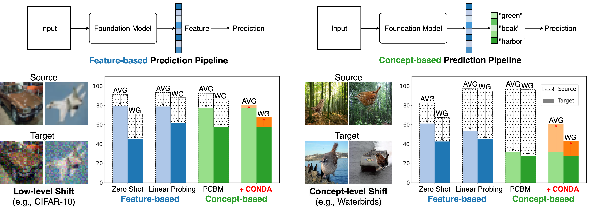
However, we observe that CBMs directly deployed under distribution shifts often do not produce more robust predictions compared to FM-based classifiers (either in zero-shot or fine-tuned configurations). For instance, as illustrated in Figure 1, even when a concept-based prediction pipeline matches or outperforms a feature-based prediction pipeline in the training (source) domain, its test-time (deployment) performance can drop significantly under distribution shifts. This highlights that a naive adoption of CBMs is insufficient for fully leveraging the robustness and expressiveness of FM features under test-time shifts, necessitating a dynamic approach for adapting concept-based predictions in real-world deployments.
The problem of test-time (or source-free domain) adaptation (TTA) has recently been explored extensively (Wang et al., 2021; Jung et al., 2023; Liang et al., 2023). The goal of TTA is to adapt a deep classifier, trained on source domain data, to a test-time deployment setting where there could be distribution shifts (e.g., corruptions, environment changes), and given access to only unlabeled test data and the source domain classifier. While the main focus of TTA methods has been on non-interpretable, deep classifier networks, we present the first approach (to our knowledge) for TTA of concept bottlenecks with a foundation model backbone. Our key contributions are summarized as follows: given unlabeled test data, a frozen FM, and a pre-constructed concept bottleneck, we
-
1.
formally categorize the types of distribution shifts expected during deployment, identifying possible failure modes of the concept bottleneck pipeline under these shifts (Section 2);
-
2.
propose a novel framework CONDA (CONcept-based Dynamic Adaptation), where each component of the framework is adapted based on the identified failure modes, without requiring access to the source dataset or any labels for the test data (Section 3);
-
3.
empirically demonstrate the robustness and interpretability of CONDA across various FM backbones (e.g., CLIP:ViT-L/14) and concept bottleneck construction methods (e.g., post-hoc CBM), showing that CONDA improves the test-time accuracy by up to 28%, and provides concept-based interpretations better tailored towards the test inputs (Section 4).
Related Work. Distribution shifts occur when the data distribution during deployment differs from that during training, leading to degraded model performance (Quiñonero-Candela et al., 2022). To address this issue, TTA methods adapt the model parameters using only unlabeled test data to enhance the robustness under such shifts. Representative methods include entropy minimization (Wang et al., 2021; Zhang et al., 2022), self-supervised learning at test time (Sun et al., 2020), class-aware feature alignment (Jung et al., 2023), and updating batch normalization statistics using test data (Nado et al., 2020). These methods enable models to adapt on-the-fly without requiring access to the labeled training data. In the era of foundation models, recent efforts have been made to enhance their zero-shot inference robustness under distribution shifts without modifying their internal parameters (Chuang et al., 2023; Adila et al., 2024). However, improving the robustness of the foundation model itself is not the focus of our work. Instead, given any foundation model, regardless of its inherent robustness, we aim to construct an interpretable framework without sacrificing the utility, striving for performance that matches or exceeds that of the foundation model’s feature-based predictions.
2 Concept Bottleneck Model under Distribution Shifts
Notations. Consider a classification problem with inputs and class labels . We assume that the labeled training data from a source domain are sampled from an unknown probability distribution , and unlabeled test data from a target domain are sampled from an unknown probability distribution (the training dataset is not accessible in our problem setting). The subscripts ‘s’ and ‘t’ refer to the source and target domain respectively. Boldface symbols are used to denote vectors and tensors. The standard inner-product between a pair of vectors is denoted by , and their cosine similarity is defined as . The set is denoted concisely as for . Please see Table 2 in the Appendix for a quick reference on the notations.
2.1 Background: Foundation Models with a Concept Bottleneck
Consider a foundation model , which is any pre-trained backbone model or feature extractor (Eslami et al., 2023; Jia et al., 2021; Girdhar et al., 2023) that maps the input to an intermediate feature embedding . is pre-trained on a large-scale, broad mixture of data for general purposes, i.e., not restricted to a specific domain. For a specific downstream classification task, the general practice is to either apply zero-shot prediction on , or to train a shallow label predictor , that maps to the un-normalized class predictions , using a supervised loss (e.g., cross-entropy).
A CBM (Koh et al., 2020) first projects the high-dimensional feature embedding to a lower -dimensional () concept-score space (acting like a bottleneck), and follows it with a label predictor, which is a simple affine or fully-connected layer that maps the concept scores into class predictions. The concept bottleneck is represented by a matrix of unit-norm concept vectors , where each represents a high-level concept (e.g., “stripes”, “fin”, “dots”). The concept scores are obtained via a linear projection , which is followed by a fully-connected layer to obtain the CBM model as
| (1) |
The label predictor is defined by the parameters , , and . A key advantage of the CBM is that its predictions are an affine combination of the high-level concept scores, which allows for better interpretability of the model. Since the label predictor of a CBM is chosen to be simple, its performance is strongly dependent on the construction of the concept bank. Additional details on the preparation of concept vectors can be found in Appendix A.
2.2 Distribution Shifts in the Wild
Let be a finite set of measurable input transformations, where each is a measurable function. We also define a transformed input space encompassing all possible transformed inputs: . Without loss of generality, we set to be the identity function . Let and be probability measures on representing the distributions over input transformations in the source and target domains, respectively. We define the source domain , equipped with such that . Its joint distribution is denoted by over such that , where is the underlying distribution over inputs and labels. Similarly, we define the target domain with a probability measure such that . Its joint distribution is denoted by over such that , assuming that the are invertible or appropriately measurable for their pre-images.
Let be a concept hypothesis class, defined as the space of measurable concept mappings from the feature representation to concept scores. We also define the concept set , where each represents a high-level concept mapping (e.g., stripe pattern, grass, beach, etc.). For a domain , we define the concept score distribution as , where is the push-forward measure (Le Gall, 2022) of under . Note that is determined by such that 111 A common approach is to define as the inner product of a (unit-normalized) concept vector with the feature representation , which results in a score for concept . .
Let be a classification hypothesis class, defined as a set of measurable classifiers mapping the concept scores to prediction logits. Finally, we define the distribution of predictions as the push-forward measure of under : .
Given and , we categorize the distribution shifts in the target domain, , into one of the following broad categories:
-
1.
Low-level shift: This type of transformation does not change the concept score distribution across the domains. Examples include additive Gaussian noise, blurring, and pixelization, which employ low-level changes to the input (e.g., CIFAR10-C (Hendrycks & Dietterich, 2019)):
(2) Naturally, the resulting distribution of predictions based on the concept scores also remains the same across the domains, i.e., .
- 2.
Definition 1
The concept set is complete if there exists a classifier such that, for both low-level and concept-level shifts, the prediction distributions conditioned on the concepts are identical for source and target domains:
| (4) |
This implies that there exists a mapping from concept scores to labels encompassing both the source and target domains.
2.3 Failure Modes of Concept Bottleneck for Foundation Models
Based on the definitions above, we categorize the possible failure modes of the decision-making pipeline of a foundation model equipped with a CBM, defined by a given , and as follows.
-
1.
Non-robust concept bottleneck under low-level shift: the concept mapping is not robust to low-level shifts, causing discrepancies in the concept-level predictions:
violating the requirement for a low-level shift in Eqn. 2. Such discrepancies in the concept predictions can lead to degraded performance in , resulting from mismatched prediction distributions, i.e., .
- 2.
-
3.
Incomplete concept set: The concept set is not complete, and there does not exist any such that . Intuitively, it fails to capture all the necessary information for consistent predictions across domains, and Definition 1 is not achievable in the first place.
3 CONDA: Concept-based Dynamic Adaptation
To address the failure modes of a CBM identified in the previous section, here we propose a dynamic approach for adaptation of a CBM based only on unlabeled test data. We follow the setting of test-time adaptation, where the foundation model and CBM, consisting of the concept bank and label predictor , trained on the source domain are given (see Eqn 1), but the source (training) dataset is not available. Let be the unlabeled test set from the target distribution. To address the three potential failure modes in a CBM pipeline identified in Section 2.3, we propose the following three-step adaptation procedure, with each step designed to specifically tackle one of the respective failure modes:
-
1.
Concept-Score Alignment (CSA): The goal of this step is to perform a feature alignment of the concept scores of test inputs such that their class-conditional distributions are close to that of the concept scores in the source dataset 222We drop the subscript ‘s’ to denote that they are adaptation parameters, not specific to the source domain.. By adapting the concept vectors , this will ensure that the label predictor continues to “see” very similar class-conditional input distributions at test time, thereby maintaining accurate predictions.
-
2.
Linear Probing Adaptation (LPA): To further address any discrepancy or mismatch in the feature alignment CSA step (e.g., due to distribution assumptions), here we adapt the label predictor of the CBM, with the concept vectors fixed at their updated values from the CSA step.
-
3.
Residual Concept Bottleneck (RCB): As discussed in Section 2.3, the concept bank from the source domain could be incomplete, and new concepts may be required to bridge the distribution gap between the domains. In this step, we introduce a residual CBM with additional concept vectors and a linear predictor, which are jointly optimized (with the parameters of the main CBM fixed) to improve the test accuracy.
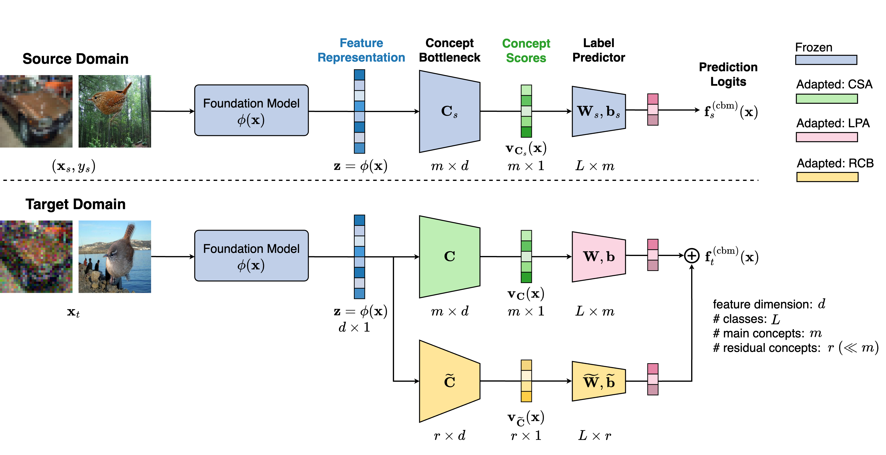
Target Domain CBM. Figure 2 shows the overall architecture of CONDA. The residual concept bottleneck is shown as a separate branch, where we introduce additional concept vectors . The concept scores are obtained by projecting the feature representation on these residual concept vectors, and the scores are passed to another linear predictor to obtain the un-normalized class predictions (logits) of the residual CBM: . The un-normalized predictions of the target domain CBM are obtained by adding that of the main and the residual branch CBMs, giving
| (5) |
where and . For comparison with the source domain CBM (Eqn. 1), we have defined the combined parameters from the main and residual branch CBMs as , , and . That is, adding the residual CBM is equivalent to introducing additional rows (columns) in the concept (weight) matrix. For adaptation, the parameters of the main CBM are initialized to their corresponding values from the source domain, while the parameters of the residual CBM are initialized randomly.
Pseudo-labeling. Since the test samples are unlabeled, it becomes challenging to design adaptation objectives that can minimize a smooth proxy of the classification error rate on the target distribution. We utilize the idea of pseudo-labeling to address this, as commonly done in the TTA and semi-supervised learning literature (Chen et al., 2022; Lee et al., 2013; Sohn et al., 2020). A simple approach for pseudo-labeling the test set is to use the class predictions of the (un-adapted) source-domain CBM, referred to as “self-labeling”. However, since this CBM is often not robust to distribution shifts in the first place, this can produce poor-quality pseudo-labels for adaptation. We leverage the fact that the feature extraction backbone is a foundation model that is pre-trained on diverse data distributions, and as a result is likely to be relatively robust to distribution shifts. We take an ensemble of the commonly used zero-shot predictor (as done e.g., in Radford et al. (2021)) and a linear probing predictor (trained on the source dataset on top of the foundation model) to get the pseudo-labels for test samples. We combine the two by taking the class predicted with higher confidence across both predictors. We note that more advanced pseudo-labeling methods e.g., involving weak- and strong-augmentations, and soft nearest-neighbor voting (Chen et al., 2022) can be used to potentially improve our method (see Appendix D for further exploration).
Following the convention in the TTA literature (Wang et al., 2021; Chen et al., 2022), we randomly split the test data into fixed-size batches , and perform adaptation sequentially on each batch , obtaining the adapted model’s predictions on the same batch, before moving to the next one. Also, the parameters of the CBM (main and residual) are adapted in an online fashion (not episodically) (Wang et al., 2021), i.e., the adapted parameters learned from a batch are used to initialize the next batch and so on 333In the episodic approach, parameters would be reset to their source domain values to initialize each batch.. For convenience, we define the test dataset with paired pseudo-labels as , and a corresponding pseudo-labeled test batch as . We next expand on each stage of the CBM adaptation outlined earlier, and provide a complete algorithm for the same in Algorithm 1 in the Appendix.
3.1 Concept Score Alignment
From Figure 2 (top half) and Eqn. 1, the concept scores are input to the linear label predictor . Let be the class-conditional distributions of these concept scores on the source domain. At test time, if the distribution of the input changes such that , then there is a corresponding change in the class-conditional distributions of concept scores . The goal of concept-score alignment (CSA) is to adapt the source domain concept bank to a target domain-specific one such that the class-conditional distributions after adaptation are close to that of the source domain under some distributional distance (e.g., Kullback-Leibler or Total-variation). Informally, we wish to find an adapted concept bank , starting from , such that
If the class priors do not change significantly, this can ensure that the label predictor of the main CBM continues to receive concept scores from a similar distribution as the source domain.
We model the class-conditional distributions of the concept scores in the source domain as multivariate Gaussians: . Given a labeled source-domain dataset, it is straight-forward to estimate and using the sample mean and sample covariance of on the data subset from class (max-likelihood estimate). Although we cannot access the source domain dataset during adaptation, we assume to have access to these distribution statistics . At test time, changes to the distribution of the concept scores can be captured by a concept matrix (to be adapted). For a test input , the distance of its concept scores from the Gaussian distribution of class is given by the Mahalanobis metric .
Intra-class and Inter-class Distances. Taking the pseudo-label as a proxy for the true label of , the intra-class (or within-class) distance measures the closeness of to samples from its own class, while the inter-class (or between-class) distance measures the separation of to samples from the other classes. They are defined as follows:
| (6) | ||||
| (7) |
Motivated by class-aware feature alignment CAFA (Jung et al., 2023), we explore an adaptation loss that is specifically designed to achieve concept-score alignment on a per-class level. This loss is based on the idea that for discriminative feature alignment, the intra-class distances should be small and the inter-class distances should be large on the test samples (Ye et al., 2021; Ming et al., 2023).
| (8) |
With this setup, we propose the adaptation objective for CSA to minimize on a test batch:
| (9) |
The second term is a regularization on how much the concept vectors can deviate from their source domain values in terms of the Frobenius norm.
3.2 Linear Probing Adaptation
In this step, we focus on improving the test accuracy of the label predictor of the main CBM branch , with the concept vectors fixed at their updated values from the CSA step (the residual CBM parameters are also frozen). For this, we use the cross-entropy loss between the predictions of the target domain CBM (Eqn. 3) and the pseudo-labels of a test batch . In order to enhance the interpretability of the label predictor, we impose sparsity and grouping effect in its weights via an Elastic-net penalty term (Zou & Hastie, 2005; Yuksekgonul et al., 2023) given by
| (10) |
where is the -th row of , and . The adaptation objective for LPA is given by
| (11) |
where is the Softmax probability for class given the logits , and is a sparsity regularization hyper-parameter. Using this objective, the label predictor is adapted such that the CBM’s predictions on a test batch are consistent with their pseudo-labels.
3.3 Residual Concept Bottleneck
We next discuss adaptation of the residual branch of the CBM whose parameters are . The additional concept vectors in are expected to capture new concepts in the target data and compensate for the potentially incomplete coverage of the main CBM (see Section 2.3). By increasing the expressiveness of the concept subspace, we expect to improve the accuracy on the target dataset beyond the CSA and LPA steps. Therefore, we first have a cross-entropy loss term in this adaptation objective (as in Eqn. 11). We also introduce a cosine similarity based regularization in the objective to encourage the new concept vectors in to be less redundant with each other and to have less overlap with the existing concept vectors (obtained from the CSA step).
| (12) |
Finally, we include a coherency regularization term in the objective (modified from Yeh et al. (2020)) to improve the interpretability of the learned residual concepts, given by
| (13) |
where is the subset of the current target batch that has the -largest concept scores for residual concept vector (i.e., the top- nearest neighbors of among the feature representations from ).
The objective to be minimized for adapting the residual concept bottleneck (with the parameters of the main CBM branch frozen) is given by:
| (14) |
The constants and are hyper-parameters that control the strength of the regularization terms. Note that for the residual CBM, we jointly adapt and , because we have a common objective of increasing the test accuracy, whereas for the main CBM, the adaptation is done in two stages (CSA and LPA), with CSA focusing on distribution alignment of the concept scores based on the intra-class and inter-class distances.
Additional details on our method are given in Appendix B. This includes 1) complexity analysis and evaluation of running times of CONDA; and 2) automatic annotation (captioning) of the adapted and residual concept vectors for interpretability analysis.
4 Experiments
In this section, we conduct experiments to answer the following three research questions:
-
RQ1:
How effective is CONDA in improving the test-time performance of deployed classification pipelines that use a foundation models with a concept bottleneck predictor?
-
RQ2:
How does each component of CONDA specifically address and remedy the failures caused by different types of distribution shifts?
-
RQ3:
How do the concept-based explanations change before and after test-time adaptation?
4.1 Setup
A detailed description of the experimental setup is available in Appendix C.
Datasets. We evaluate the performance of concept bottlenecks for FMs and the proposed adaptation on five real-world datasets with distribution shifts, following the setup in Lee et al. (2023): (1) CIFAR10 to CIFAR10-C and CIFAR100 to CIFAR100-C for low-level shift, (2) Waterbirds and Metashift for concept-level shift, and (3) Camelyon17 for natural shift.
Backbone Foundation Models. For the CIFAR datasets, we use CLIP:ViT-L/14 (FARE2) (Schlarmann et al., 2024), which is adversarially fine-tuned to be more robust to (adversarial) low-level perturbations than standard CLIP variants. We employ CLIP:ViT-L/14 (Radford et al., 2021) for Waterbirds and Metashift. For Camelyon17, we utilize BioMedCLIP (Zhang et al., 2023), which is pre-trained on diverse medical domains to understand medical images and text jointly, making it suitable for zero-shot tasks in the medical domain.
Preparing the Concept Bottleneck. We evaluate CONDA using three popular approaches for constructing the concept bottleneck: (1) using a general-purpose concept bank where natural language concept descriptions and modern vision-language models (e.g., Stable Diffusion (Rombach et al., 2022)) are leveraged to automatically generate concept examples for finding concept vectors (Yuksekgonul et al., 2023; Wu et al., 2023b); (2) unsupervised learned concepts where concept vectors are learned via optimization to maximize the concept-based prediction accuracy (Yeh et al., 2020); and (3) employing GPT-3 with appropriate filtering to discover a tailored set of concepts for the bottleneck (Oikarinen et al., 2023). More details can be found in Appendix A and Appendix C.2.
Metrics. We report the performance in terms of two metrics: averaged group accuracy (AVG) and worst-group accuracy (WG). AVG is the average (per-class) accuracy across the classes, and WG is the minimum (per-class) accuracy across the classes.
4.2 RQ1: Effectiveness of CONDA under real-world distribution shifts
Dataset ZS LP Yuksekgonul et al. (2023) Yeh et al. (2020) Oikarinen et al. (2023) Unadapted w/ CONDA Unadapted w/ CONDA Unadapted w/ CONDA CIFAR10 Source AVG 91.18 93.26 0.02 92.55 0.05 - 96.26 0.11 - 95.24 0.08 - WG 71.1 88.23 0.08 85.64 0.55 - 90.89 0.97 - 90.11 0.76 - Target AVG 66.68 15.88 84.11 1.54 82.61 1.65 84.38 1.52 89.76 1.10 85.14 1.29 81.22 2.77 84.56 3.11 WG 55.04 2.05 71.37 3.33 68.62 2.93 72.69 2.49 78.28 2.43 76.09 1.66 69.03 2.47 72.88 2.01 CIFAR100 Source AVG 62.73 66.67 0.29 65.98 0.10 - 83.87 0.04 - 68.36 0.09 - WG 5.12 4.28 0.51 9.5 1.14 - 51.0 1.40 - 12.09 1.23 - Target AVG 51.90 1.76 55.30 1.63 51.53 0.13 53.88 0.23 72.33 0.15 70.82 0.20 52.16 0.14 54.79 1.17 WG 1.73 0.4 2.47 0.49 2.80 0.71 2.56 0.27 30.60 1.42 28.44 0.95 6.32 0.38 6.01 0.22 Waterbirds Source AVG 82.61 97.43 0.05 97.78 0.16 - 98.80 0.04 - 98.80 0.17 - WG 67.45 95.08 0.11 96.31 0.38 - 98.21 0.08 - 97.03 0.26 - Target AVG 61.06 54.10 0.55 32.03 0.58 60.69 0.23 45.03 0.34 61.11 0.09 46.18 0.42 62.71 0.33 WG 42.52 44.70 0.70 27.80 1.24 43.01 0.46 38.74 0.68 41.86 0.25 35.29 1.52 44.01 0.60 Metashift Source AVG 95.72 97.27 0.28 97.94 0.10 - 97.18 0.01 - 98.02 0.10 - WG 93.44 96.62 0.39 96.94 0.30 - 96.0 0.01 - 97.25 0.10 - Target AVG 94.65 80.39 0.42 84.45 1.39 93.69 0.20 90.53 0.09 93.81 0.13 83.72 2.21 93.90 0.13 WG 92.81 65.33 0.61 73.89 3.21 92.02 0.12 84.84 0.20 91.41 0.26 75.41 1.68 91.77 0.12 Camelyon17 Source AVG 77.71 92.14 0.01 89.07 0.60 - 97.01 0.05 - 94.19 0.11 - WG 69.73 88.89 0.02 84.34 1.39 - 96.31 0.24 - 91.23 0.12 - Target AVG 84.55 93.69 0.01 89.71 0.65 91.20 0.06 95.01 0.07 92.54 0.16 91.75 0.08 93.16 0.05 WG 76.08 89.49 0.02 85.96 0.88 88.96 0.16 93.07 0.37 91.07 0.32 87.24 0.09 89.00 0.07
Table 1 presents our main results evaluating the effectiveness of CONDA on different real-world distribution shifts, when combined with different CBM baselines. First of all, we observe that leveraging the expressive power of the FM feature representations can enhance the performance of CBMs. For example, using the method from Oikarinen et al. (2023), their reported accuracies on CIFAR10 and CIFAR100 are 86.40% and 65.13% respectively when using the CLIP-RN50 backbone. In our experiments, by employing the adversarially fine-tuned CLIP-ViT-L/14, we achieve higher accuracies of 95.24% and 68.36% respectively (source domain). This demonstrates the potential for improved utility in concept-based interpretable pipelines as foundation models continue to improve.
However, this improved performance in the source domain often does not translate to robustness after deployment. Under low-level shifts, the performance of CBMs may be comparable to that of the non-interpretable counterparts (ZS and LP), but they are not inherently more robust to low-level shifts. The performance drop is particularly severe under concept-level shifts when the CBM is not adapted. But with adaptation using CONDA, the test-time accuracy under different distribution shifts increases significantly in most cases. The performance is on par with or even surpasses that of the non-interpretable methods, notably in terms of the WG accuracy.
4.3 RQ2: Effectiveness of Individual Components of CONDA
We next analyze the individual contributions of the components in CONDA, viz. CSA, LPA, and RCB. Figure 3 illustrates the relative AVG and WG (%) when adapting the CBM of Yeh et al. (2020). Under low-level shifts, CSA plays a crucial role in performance improvement by encouraging the high-level concept scores to remain similar. Interestingly, using CSA alone even surpasses the performance achieved when all components are combined. This trend is also observed with the Camelyon17 dataset, which resembles a low-level shift due to lighting differences across hospitals. On the other hand, under concept-level shifts, LPA and RCB become the key components of adaptation. These components allow the model to adjust concept reliance to the target domain and address the incompleteness of the deployed concept set, tailoring it to the target data. In this context, CSA has minimal impact, while using only LPA leads to performance gains comparable to, or even exceeding that achieved when all components are included.
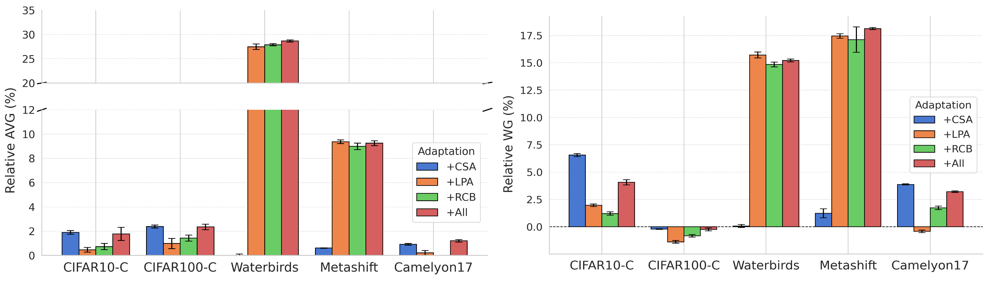
Interestingly, this phenomenon aligns with the findings of Lee et al. (2023) that fine-tuning only a subset of layers can be more effective than fine-tuning all layers, depending on the type of distribution shift. In our case, the concept-based prediction pipeline can be considered a special instance of their framework with a two-layer classifier. The concept bottleneck layer corresponds to the first layer, which is particularly important for addressing input-level shifts (following their definition), while the linear probing layer corresponds to the second layer, which is more important for handling output-level shifts (see Section 3 of their paper). These empirical observations confirm our design motivation for CONDA, i.e., different components play key roles in adapting to different types of distribution shifts.
Additional results, including ablation experiments to understand the effect of hyper-parameters, improved pseudo-labeling methods, and the choice of backbone foundation model are given in Appendix D. They provide additional support for the strong empirical performance of CONDA.
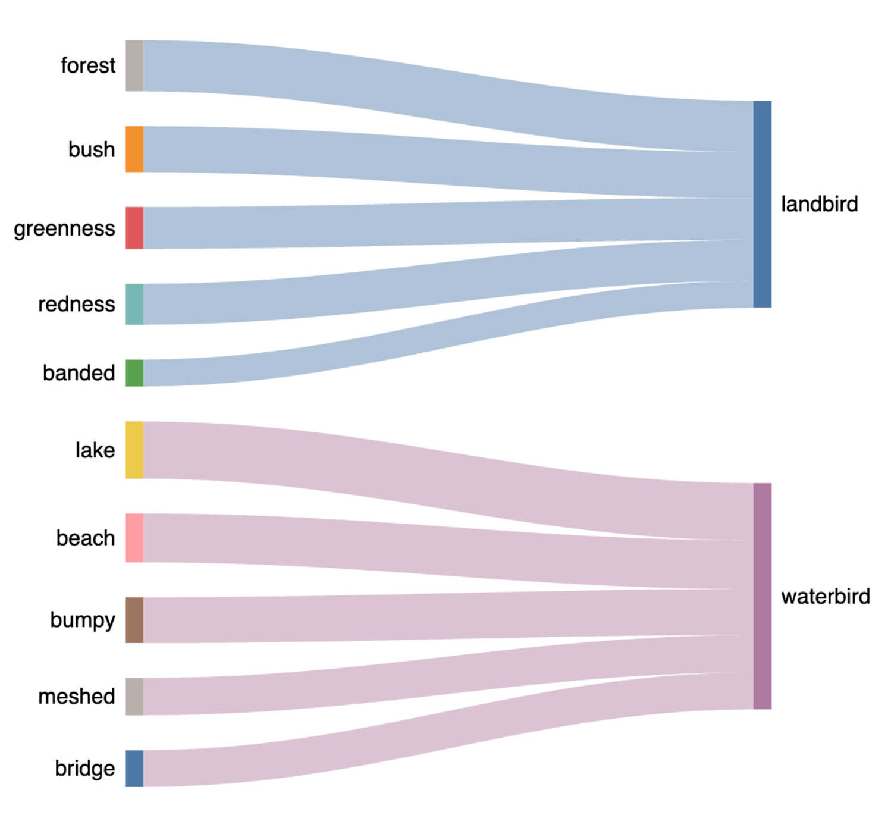
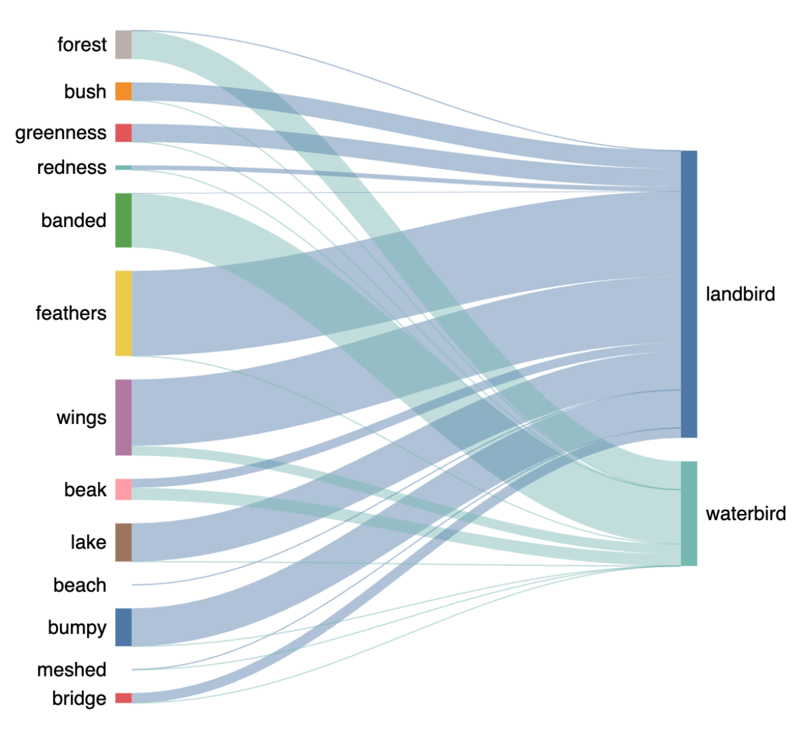
4.4 RQ3: Interpretability of CONDA
We investigate how the concept-based explanations change through adaptation by CONDA on the Waterbirds dataset. In Figure 4(a), we present the top five most prominent concepts contributing to the predictions for each class. As expected, in the source domain, land-related concepts are most important for predicting “landbird”, and do not positively contribute to “waterbird”; and vice versa for water-related concepts. After adapting to the target domain (test dataset), we observe adjustments in the concept-to-class mappings. Notably, land-related concepts begin to positively contribute to the prediction of “waterbird”. This shift indicates that CONDA successfully adapts the concept-based explanations to reflect the new correlations observed in the target domain. Moreover, in the original concept bottleneck constructed following Wu et al. (2023b), there were no bird-related concepts that could help make robust predictions independent of spurious background correlations. By employing RCB with five residual concepts, we identified that three of them correspond to bird-related concepts: feathers, wings, and beak 444To interpret the residual concepts, we use automated concept annotations; see details in Appendix B.2. This demonstrates that CONDA adapts in a manner aligned with human intuition, just like a human intervening in a CBM to correct its predictions would. More importantly, RCB captures concepts that may have been missed during the initial construction of the concept bottleneck, enhancing both the interpretability and robustness. Additional results and analysis of the interpretability of CONDA can be found in Appendix E.
5 Conclusions and Future Work
This work was motivated by our observation that recent CBM variants atop a backbone foundation model may close the performance gap with feature-based predictions in the source domain, but they are often unable to do so under distribution shifts at test time (after deployment). Hence, for an interpretable and robust decision-making pipeline under distribution shifts, while fully leveraging the representative power of foundation models, an adaptive test-time approach is required. To the best of our knowledge, we have proposed the first effort to tackle this problem setting for CBMs. We formalized potential failure modes under low-level and concept-level distribution shifts and proposed a novel test-time adaptation framework, named CONDA. Each component of CONDA is designed to address specific failure modes, effectively improving the test-time performance of a deployed CBM using only unlabeled test data.
Our framework can continue to benefit from ongoing improvements in the robustness of foundation models and the development of more advanced pseudo-labeling techniques, both of which represent promising avenues for future work. Another promising direction for future research is to develop a deeper theoretical understanding of concept bottlenecks under distribution shifts. For instance, it would be valuable to i) characterize the sufficiency of a given concept set from training (source domain) for robust test-time accuracy under different distribution shifts; and ii) to quantify or bound the extent to which test-time adaptation can bridge the accuracy gap between the source and target distributions. Such theoretical insights would complement the algorithmic and empirical advancements, guiding both the design of more effective residual concept bottleneck and the development of improved adaptation strategies. A discussion of the limitations of this work is given in Appendix F.
References
- Abid et al. (2022) Abubakar Abid, Mert Yuksekgonul, and James Zou. Meaningfully debugging model mistakes using conceptual counterfactual explanations. In International Conference on Machine Learning, pp. 66–88. PMLR, 2022.
- Adebayo et al. (2020) Julius Adebayo, Michael Muelly, Ilaria Liccardi, and Been Kim. Debugging tests for model explanations. In Proceedings of the 34th International Conference on Neural Information Processing Systems, pp. 700–712, 2020.
- Adila et al. (2024) Dyah Adila, Changho Shin, Linrong Cai, and Frederic Sala. Zero-shot robustification of zero-shot models. In The Twelfth International Conference on Learning Representations, 2024.
- AlBadawy et al. (2018) Ehab A AlBadawy, Ashirbani Saha, and Maciej A Mazurowski. Deep learning for segmentation of brain tumors: Impact of cross-institutional training and testing. Medical physics, 45(3):1150–1158, 2018.
- Bau et al. (2017) David Bau, Bolei Zhou, Aditya Khosla, Aude Oliva, and Antonio Torralba. Network dissection: Quantifying interpretability of deep visual representations. In Proceedings of the IEEE conference on computer vision and pattern recognition, pp. 6541–6549, 2017.
- Bommasani et al. (2021) Rishi Bommasani, Drew A Hudson, Ehsan Adeli, Russ Altman, Simran Arora, Sydney von Arx, Michael S Bernstein, Jeannette Bohg, Antoine Bosselut, Emma Brunskill, et al. On the opportunities and risks of foundation models. CoRR, abs/2108.07258, 2021. URL https://arxiv.org/abs/2108.07258.
- Chen et al. (2022) Dian Chen, Dequan Wang, Trevor Darrell, and Sayna Ebrahimi. Contrastive test-time adaptation. In IEEE/CVF Conference on Computer Vision and Pattern Recognition (CVPR), pp. 295–305. IEEE, 2022. doi: 10.1109/CVPR52688.2022.00039. URL https://doi.org/10.1109/CVPR52688.2022.00039.
- Choi et al. (2023) Jihye Choi, Jayaram Raghuram, Ryan Feng, Jiefeng Chen, Somesh Jha, and Atul Prakash. Concept-based explanations for out-of-distribution detectors. In International Conference on Machine Learning, pp. 5817–5837. PMLR, 2023.
- Chuang et al. (2023) Ching-Yao Chuang, Varun Jampani, Yuanzhen Li, Antonio Torralba, and Stefanie Jegelka. Debiasing vision-language models via biased prompts. arXiv preprint arXiv:2302.00070, 2023.
- Eslami et al. (2023) Sedigheh Eslami, Christoph Meinel, and Gerard De Melo. PubMedCLIP: How much does CLIP benefit visual question answering in the medical domain? In Findings of the Association for Computational Linguistics: EACL 2023, pp. 1151–1163, 2023.
- Girdhar et al. (2023) Rohit Girdhar, Alaaeldin El-Nouby, Zhuang Liu, Mannat Singh, Kalyan Vasudev Alwala, Armand Joulin, and Ishan Misra. Imagebind: One embedding space to bind them all. In CVPR, 2023.
- Havasi et al. (2022) Marton Havasi, Sonali Parbhoo, and Finale Doshi-Velez. Addressing leakage in concept bottleneck models. Advances in Neural Information Processing Systems, 35:23386–23397, 2022.
- Hendrycks & Dietterich (2019) Dan Hendrycks and Thomas Dietterich. Benchmarking neural network robustness to common corruptions and perturbations. Proceedings of the International Conference on Learning Representations, 2019.
- Jia et al. (2021) Chao Jia, Yinfei Yang, Ye Xia, Yi-Ting Chen, Zarana Parekh, Hieu Pham, Quoc Le, Yun-Hsuan Sung, Zhen Li, and Tom Duerig. Scaling up visual and vision-language representation learning with noisy text supervision. In International conference on machine learning, pp. 4904–4916. PMLR, 2021.
- Jung et al. (2023) Sanghun Jung, Jungsoo Lee, Nanhee Kim, Amirreza Shaban, Byron Boots, and Jaegul Choo. CAFA: Class-aware feature alignment for test-time adaptation. In Proceedings of the IEEE/CVF International Conference on Computer Vision, pp. 19060–19071, 2023.
- Kim et al. (2018) Been Kim, Martin Wattenberg, Justin Gilmer, Carrie Cai, James Wexler, Fernanda Viegas, et al. Interpretability beyond feature attribution: Quantitative testing with concept activation vectors (TCAV). In International conference on machine learning, pp. 2668–2677. PMLR, 2018.
- Koh et al. (2020) Pang Wei Koh, Thao Nguyen, Yew Siang Tang, Stephen Mussmann, Emma Pierson, Been Kim, and Percy Liang. Concept bottleneck models. In Hal Daumé III and Aarti Singh (eds.), Proceedings of the 37th International Conference on Machine Learning, volume 119 of Proceedings of Machine Learning Research, pp. 5338–5348. PMLR, 13–18 Jul 2020. URL https://proceedings.mlr.press/v119/koh20a.html.
- Kumar et al. (2022) Ananya Kumar, Aditi Raghunathan, Robbie Jones, Tengyu Ma, and Percy Liang. Fine-tuning can distort pretrained features and underperform out-of-distribution. In International Conference on Learning Representations, 2022.
- Le Gall (2022) Jean-François Le Gall. Measure theory, Probability, and Stochastic Processes. Springer, 2022.
- Lee et al. (2013) Dong-Hyun Lee et al. Pseudo-label: The simple and efficient semi-supervised learning method for deep neural networks. In Workshop on challenges in representation learning, ICML, volume 3, pp. 896. Atlanta, 2013.
- Lee et al. (2023) Yoonho Lee, Annie S. Chen, Fahim Tajwar, Ananya Kumar, Huaxiu Yao, Percy Liang, and Chelsea Finn. Surgical fine-tuning improves adaptation to distribution shifts. In The Eleventh International Conference on Learning Representations, ICLR. OpenReview.net, 2023. URL https://openreview.net/pdf?id=APuPRxjHvZ.
- Liang et al. (2023) Jian Liang, Ran He, and Tieniu Tan. A comprehensive survey on test-time adaptation under distribution shifts. CoRR, abs/2303.15361, 2023. doi: 10.48550/ARXIV.2303.15361. URL https://doi.org/10.48550/arXiv.2303.15361.
- Liang & Zou (2021) Weixin Liang and James Zou. Metashift: A dataset of datasets for evaluating contextual distribution shifts and training conflicts. In International Conference on Learning Representations, 2021.
- Ming et al. (2023) Yifei Ming, Yiyou Sun, Ousmane Dia, and Yixuan Li. How to exploit hyperspherical embeddings for out-of-distribution detection? In The Eleventh International Conference on Learning Representations (ICLR). OpenReview.net, 2023. URL https://openreview.net/pdf?id=aEFaE0W5pAd.
- Moayeri et al. (2023) Mazda Moayeri, Keivan Rezaei, Maziar Sanjabi, and Soheil Feizi. Text-to-concept (and back) via cross-model alignment. In International Conference on Machine Learning, pp. 25037–25060. PMLR, 2023.
- Nado et al. (2020) Zachary Nado, Shreyas Padhy, D Sculley, Alexander D’Amour, Balaji Lakshminarayanan, and Jasper Snoek. Evaluating prediction-time batch normalization for robustness under covariate shift. arXiv preprint arXiv:2006.10963, 2020.
- Oikarinen & Weng (2023) Tuomas Oikarinen and Tsui-Wei Weng. CLIP-Dissect: Automatic description of neuron representations in deep vision networks. In The Eleventh International Conference on Learning Representations, 2023. URL https://openreview.net/forum?id=iPWiwWHc1V.
- Oikarinen et al. (2023) Tuomas Oikarinen, Subhro Das, Lam M. Nguyen, and Tsui-Wei Weng. Label-free concept bottleneck models. In The Eleventh International Conference on Learning Representations, 2023. URL https://openreview.net/forum?id=FlCg47MNvBA.
- Quiñonero-Candela et al. (2022) Joaquin Quiñonero-Candela, Masashi Sugiyama, Anton Schwaighofer, and Neil D Lawrence. Dataset shift in machine learning. Mit Press, 2022.
- Radford et al. (2021) Alec Radford, Jong Wook Kim, Chris Hallacy, Aditya Ramesh, Gabriel Goh, Sandhini Agarwal, Girish Sastry, Amanda Askell, Pamela Mishkin, Jack Clark, et al. Learning transferable visual models from natural language supervision. In International conference on machine learning, pp. 8748–8763. PMLR, 2021.
- Rombach et al. (2022) Robin Rombach, Andreas Blattmann, Dominik Lorenz, Patrick Esser, and Björn Ommer. High-resolution image synthesis with latent diffusion models. In Proceedings of the IEEE/CVF conference on computer vision and pattern recognition, pp. 10684–10695, 2022.
- Sagawa et al. (2019) Shiori Sagawa, Pang Wei Koh, Tatsunori B Hashimoto, and Percy Liang. Distributionally robust neural networks. In International Conference on Learning Representations, 2019.
- Schlarmann et al. (2024) Christian Schlarmann, Naman Deep Singh, Francesco Croce, and Matthias Hein. Robust CLIP: Unsupervised adversarial fine-tuning of vision embeddings for robust large vision-language models. In Forty-first International Conference on Machine Learning (ICML). OpenReview.net, 2024. URL https://openreview.net/forum?id=WLPhywf1si.
- Shang et al. (2024) Chenming Shang, Shiji Zhou, Hengyuan Zhang, Xinzhe Ni, Yujiu Yang, and Yuwang Wang. Incremental residual concept bottleneck models. In Proceedings of the IEEE/CVF Conference on Computer Vision and Pattern Recognition, pp. 11030–11040, 2024.
- Sohn et al. (2020) Kihyuk Sohn, David Berthelot, Nicholas Carlini, Zizhao Zhang, Han Zhang, Colin Raffel, Ekin Dogus Cubuk, Alexey Kurakin, and Chun-Liang Li. FixMatch: Simplifying semi-supervised learning with consistency and confidence. In Advances in Neural Information Processing Systems 33: Annual Conference on Neural Information Processing Systems (NeurIPS), 2020. URL https://proceedings.neurips.cc/paper/2020/hash/06964dce9addb1c5cb5d6e3d9838f733-Abstract.html.
- Speer et al. (2017) Robyn Speer, Joshua Chin, and Catherine Havasi. Conceptnet 5.5: An open multilingual graph of general knowledge. In Proceedings of the AAAI conference on artificial intelligence, volume 31, 2017.
- Sun et al. (2020) Yu Sun, Xiaolong Wang, Zhuang Liu, John Miller, Alexei Efros, and Moritz Hardt. Test-time training with self-supervision for generalization under distribution shifts. In International conference on machine learning, pp. 9229–9248. PMLR, 2020.
- Wang et al. (2023) Bowen Wang, Liangzhi Li, Yuta Nakashima, and Hajime Nagahara. Learning bottleneck concepts in image classification. In Proceedings of the ieee/cvf conference on computer vision and pattern recognition, pp. 10962–10971, 2023.
- Wang et al. (2021) Dequan Wang, Evan Shelhamer, Shaoteng Liu, Bruno Olshausen, and Trevor Darrell. Tent: Fully test-time adaptation by entropy minimization. In International Conference on Learning Representations, 2021. URL https://openreview.net/forum?id=uXl3bZLkr3c.
- Wang et al. (2022) Zifeng Wang, Zhenbang Wu, Dinesh Agarwal, and Jimeng Sun. Medclip: Contrastive learning from unpaired medical images and text. arXiv preprint arXiv:2210.10163, 2022.
- Wu et al. (2023a) Shijie Wu, Ozan Irsoy, Steven Lu, Vadim Dabravolski, Mark Dredze, Sebastian Gehrmann, Prabhanjan Kambadur, David Rosenberg, and Gideon Mann. Bloomberggpt: A large language model for finance. arXiv preprint arXiv:2303.17564, 2023a.
- Wu et al. (2023b) Shirley Wu, Mert Yuksekgonul, Linjun Zhang, and James Zou. Discover and cure: Concept-aware mitigation of spurious correlation. arXiv preprint arXiv:2305.00650, 2023b.
- Ye et al. (2021) Haotian Ye, Chuanlong Xie, Tianle Cai, Ruichen Li, Zhenguo Li, and Liwei Wang. Towards a theoretical framework of out-of-distribution generalization. Advances in Neural Information Processing Systems, 34:23519–23531, 2021.
- Yeh et al. (2020) Chih-Kuan Yeh, Been Kim, Sercan Arik, Chun-Liang Li, Tomas Pfister, and Pradeep Ravikumar. On completeness-aware concept-based explanations in deep neural networks. Advances in neural information processing systems, 33:20554–20565, 2020.
- Yu et al. (2020) Fisher Yu, Haofeng Chen, Xin Wang, Wenqi Xian, Yingying Chen, Fangchen Liu, Vashisht Madhavan, and Trevor Darrell. Bdd100k: A diverse driving dataset for heterogeneous multitask learning. In Proceedings of the IEEE/CVF conference on computer vision and pattern recognition, pp. 2636–2645, 2020.
- Yuksekgonul et al. (2023) Mert Yuksekgonul, Maggie Wang, and James Zou. Post-hoc concept bottleneck models. In The Eleventh International Conference on Learning Representations, 2023. URL https://openreview.net/forum?id=nA5AZ8CEyow.
- Zhang et al. (2022) Marvin Zhang, Sergey Levine, and Chelsea Finn. MEMO: Test time robustness via adaptation and augmentation. Advances in neural information processing systems, 35:38629–38642, 2022.
- Zhang et al. (2023) Sheng Zhang, Yanbo Xu, Naoto Usuyama, Hanwen Xu, Jaspreet Bagga, Robert Tinn, Sam Preston, Rajesh Rao, Mu Wei, Naveen Valluri, et al. Biomedclip: a multimodal biomedical foundation model pretrained from fifteen million scientific image-text pairs. arXiv preprint arXiv:2303.00915, 2023.
- Zou & Hastie (2005) Hui Zou and Trevor Hastie. Regularization and variable selection via the elastic net. Journal of the Royal Statistical Society Series B: Statistical Methodology, 67(2):301–320, 2005.
Appendices
| Symbol | Description | ||
|---|---|---|---|
| Dimension of the feature representation from the foundation model | |||
| Number of classes or size of the label set | |||
| Number of concepts in the main CBM | |||
| Number of concepts in the residual CBM | |||
| Input and corresponding label in the source domain | |||
| Input and corresponding pseudo-label in the target domain | |||
| Foundation model or the backbone feature extractor | |||
| and | Source and target domain | ||
| with | Concept mapping and concept hypothesis class | ||
| with | Classifier and classification hypothesis class | ||
| Concept score distribution for domain | |||
| Prediction distribution for domain | |||
|
|||
| Matrix of residual concept vectors adapted for the target domain of size | |||
| Main CBM linear predictor parameters. has size and has length | |||
| Residual CBM linear predictor parameters. has size and has length | |||
| CBM predictor in the source domain. See Eqn. (1) | |||
| CBM predictor in the target domain. See Eqn. (3) | |||
| Unlabeled test dataset | |||
| and | Test data batch. First one is unlabeled, while the second one includes the pseudo-labels. | ||
| Class-specific mean and covariance matrix of the concept scores from the source dataset | |||
| Concept scores obtained from the concept vectors in via the projection | |||
| Mahalanobis distance in the concept-score space | |||
| Softmax probability for class given the logits | |||
| Adaptation loss used for feature alignment. See Eqn. (8) | |||
| Adaptation objective for CSA. See Eqn. (9) | |||
| Elastic-net penalty regularization used in LPA. See Eqn. (10) | |||
| Adaptation objective for LPA. See Eqn. (11) | |||
| Cosine similarity based regularization used in RCB. See Eqn. (12) | |||
| Coherancy regularization used in RCB. See Eqn. (13) | |||
| Adaptation objective for RCB. See Eqn. (14) | |||
| Number of gradient steps for each of the CSA, LPA, and RCB adaptations. | |||
| Batch size of adaptation |
Appendix A Expanded Related Work
Concept Bottleneck Models (CBMs), introduced by Koh et al. (2020), are interpretable neural networks that map input data to a set of human-understandable concepts (the “bottleneck”) before making predictions. This architecture enhances the interpretability by revealing which concepts influence the predictions and allows users to intervene by adjusting mis-predicted concepts.
Definition of Concept Bottleneck. Despite the above benefits, early variants (e.g., (Havasi et al., 2022)) required extensive concept annotations during training, which can be costly and impractical. This reliance on predefined, annotated concepts limits their scalability and applicability to diverse domains and tasks. To address this, recent methods aim to construct CBMs without requiring explicit concept labels, and they can be placed into three main categories: (a) unsupervised learning-based concept discovery, (b) general-purpose concept bank agnostic to tasks, and (c) leveraging multi-modal foundation models. They are further discussed below.
-
(a)
Unsupervised learning-based concept discovery: Yeh et al. (2020) formulates the concept discovery as an optimization process with the objective of concept completeness, ensuring that the extracted concepts comprehensively represent the data while maintaining interpretability. This approach is further advanced in Wang et al. (2023), where they optimize task-specific concepts via self-supervision techniques such as contrastive loss to improve the quality of the learned concepts.
-
(b)
General-purpose concept bank agnostic to tasks: Yuksekgonul et al. (2023) and Wu et al. (2023b) utilize a predefined concept bank where each concept vector is derived from the parameters of a Support Vector Machine (SVM) trained to distinguish between positive and negative instances in image embeddings obtained from a backbone model. Here the dataset used to learn the SVMs does not have to be the same as the data for the given task.
-
(c)
Leveraging multi-modal foundation models: Another approach leverages the rapid advancements in multi-modal foundation models like CLIP to align visual and textual representations, enabling the mapping of each concept to a human-readable description (Moayeri et al., 2023). Yuksekgonul et al. (2023) also suggests defining each concept vector with the text embeddings from the backbone, where the text serves as human-understandable concept descriptions (refer to Figure 2 in Shang et al. (2024) for a descriptive illustration of the method). Oikarinen et al. (2023) relies on a pre-trained backbone like CLIP which maps images and textual descriptions into a shared embedding space. They define each concept vector as the mapping of an image embedding to its corresponding text embedding.
In our paper, we consider the most representative method from each category of concept bottleneck constructions: Yeh et al. (2020) for (a), Yuksekgonul et al. (2023) for (b), and Oikarinen et al. (2023) for (c) (refer to Appendix C.2 for further details on their implementations). By applying our adaptation framework to various definitions of a concept bottleneck, we demonstrate that it can effectively and flexibly enhance the post-deployment robustness of various CBM types under real-world distribution shift scenarios.
Concept-based explanations and distribution shifts. There has been growing interest in the utility of concept-based explanations under distribution shifts. The initial work by (Kim et al., 2018) hinted at the potential of high-level concepts as diagnostic units against low-level perturbations, such as adversarial examples. Following this, Adebayo et al. (2020) suggested that concept-based explanations could be more robust tools for debugging and analyzing model behaviors under spurious correlations. More recently, Abid et al. (2022) and Wu et al. (2023b) have studied the utility of concept-based explanations in the context of data drift. However, these works rely on a predefined concept bank that remains static after model deployment. Our work emphasizes the need for a dynamic approach to concept bottlenecks for the optimal utility of concept-based predictions in the deployment phase where test data can have distribution shifts. To the best of our knowledge, this is the first work to present a comprehensive view of the post-deployment performance of concept-based prediction pipelines, and to address their test-time adaptation under distribution shifts with a dynamic concept bank.
Appendix B Additional Method Details
We describe the comprehensive algorithm of CONDA in Algorithm 1.
B.1 Complexity Analysis of CONDA
Referring to Algorithm 1, we evaluate the computational complexity of the CSA, LPA, RCB, and pseudo-labeling steps for a single test batch . We recall some of the terms used in our notation.
-
•
: number of concepts in the main CBM.
-
•
: number of concepts in the residual CBM branch.
-
•
: dimension of the feature representation .
-
•
: number of classes.
-
•
: number of gradient steps for each of the CSA, LPA, and RCB adaptations.
-
•
: batch size
CSA step optimizes the concept matrix of the main CBM branch , which has parameters. Below we breakdown the computations involved in the CSA adaptation objective and its gradient updates. We assume that the mean and inverse-covariance matrices of the class-conditional concept score distributions are pre-computed from the source dataset.
Concept score projection for a single test sample: .
Intra-class and inter-class Mahalanobis distances for a single test sample: .
Frobenius norm regularization term: .
Cost of stochastic gradient update step for the batch: .
The cost of optimizing the CSA objective (Eqn. 9) for gradient update steps can be expressed as:
| (15) |
LPA step optimizes the linear predictor in the main CBM branch, whose parameters are . The number of parameters optimized in this step is . Below we breakdown the computations involved in the LPA adaptation objective and its gradient updates.
Elastic-Net regularization term: .
Cross-entropy loss term in the LPA adaptation objective (Eqn. 11) for a single test sample: .
Cost of stochastic gradient update step for the batch: .
The cost of optimizing the LPA objective for gradient update steps can be expressed as:
| (16) |
RCB step optimizes the concept matrix and linear predictor in the residual CBM branch, whose parameters are . The number of parameters optimized in this step is . Below we breakdown the computations involved in the RCB adaptation objective and its gradient updates.
Cosine similarity regularization term: .
Coherancy regularization term: .
Cross-entropy loss term in the RCB adaptation objective (Eqn. 14) for a single test sample: .
Cost of stochastic gradient update step for the batch: .
The cost of optimizing the RCB objective for gradient update steps can be expressed as:
| (17) |
Pseudo-labeling. For the pseudo-labeling method based on the ensemble of the zero-shot predictor and linear-probing predictor with the foundation model backbone, the computational complexity will be dominated by the architecture and number of parameters in the foundation model. We denote the inference cost on a test batch by . The computation involved in the zero-shot and linear probing predictions will be negligible compared to this.
The overall computational cost for a single test batch is the sum of the costs of the CSA, LPA, RCB, and pseudo-labeling steps described above. From this, we select the terms that dominate the computational cost and ignore terms that depend on smaller quantities like and . This leads us an overall complexity of . The number of concepts is usually on the order of hundreds and is much smaller than that. The embedding dimension is on the order of few hundreds to thousands, depending on the foundation model.
To quantify the computational complexity of our method, in Table 3, we report the average (per-batch) wall-clock running times of CONDA when combined with post-hoc CBM (Yuksekgonul et al., 2023). We observe that adaptation using CONDA is quite fast, taking only a few seconds per batch, with the main time-consuming component being the pseudo-labeling since it involves inference on the foundation model.
Backbone Embedding size Target Dataset Dataset size PL +CSA +LPA +RCB All CLIP:ViT-L-14 (FARE2) 768 CIFAR10-C 10000 4.113 0.116 0.021 0.038 4.288 CLIP:ViT-L-14 (FARE2) 768 CIFAR100-C 10000 16.203 0.692 0.023 0.041 16.959 CLIP:ViT-L-14 768 Waterbirds 2897 0.064 0.043 0.028 0.051 0.186 CLIP:ViT-L-14 768 Metashift 541 0.077 0.051 0.022 0.039 0.188 BiomedCLIP 512 Camelyon17 85054 0.387 0.089 0.042 0.078 0.596
B.2 Automatically Annotating Concepts
We adopt and modify CLIP-DISSECT (Oikarinen & Weng, 2023) for automatically annotating the concepts as follows.
Suppose is the set of possible concept annotations. We use ConceptNet (Speer et al., 2017) to obtain texts that are relevant to the classes. ConceptNet is an open knowledge graph, where we can find concepts that have particular relationships to a query text. For instance, for a class “cat”, one can find relations of the form “A Cat has {whiskers, four legs, sharp claws, …}”. Similarly, we can find “parts” of a given class (e.g., “bumper”, “roof” for “truck” class), or the superclass of a given class (e.g., “animal”, “canine” for “dog”). Following the setup in Yuksekgonul et al. (2023), we restrict ourselves to five sets of relations for each class: the hasA, isA, partOf, HasProperty, and MadeOf relations in ConceptNet. We collect all the concepts that have these relations with the classes in each classification task to build the concept annotation set. However, for the Waterbirds dataset, since the classes of {“waterbird”, “landbird”} are too specific in their terminology and we cannot find relevant nodes in ConceptNet, we instead use {“bird”, “water”, “land”} as the query set. When we have the concept annotations for the main concept bottleneck from before-deployment (e.g., (Yuksekgonul et al., 2023; Oikarinen et al., 2023; Wu et al., 2023b), we set as the union set of those pre-defined concepts and those identified by ConceptNet.
Let be the target domain (test) dataset. Let and be the image encoder and text encoder (respectively) of CLIP:ViT-B/16. Recall that is the backbone foundation model used in our framework. To determine the annotation for a concept vector , our goal is to assign to it the most relevant caption as follows:
-
1.
Compute the normalized text embedding of the concepts in using ; let be the normalized text embedding of the -th concept in . Also, compute the image embedding of all images in using ; let be the image embedding of the -th image in . We then compute the inner product of the all pairs of image-text embeddings via the image-text matrix where and and is the dimension of the CLIP embeddings. That is, is the inner product of the normalized embeddings of the -th target image and the -th candidate annotation.
-
2.
For all images in the target dataset, we compute and collect their concept scores as .
-
3.
The annotation for is determined by calculating the most similar concept label in based on its concept scores . The similarity with respect to a concept is defined as
(18) which is the cosine similarity between the concept scores and the corresponding column of the image-text matrix . Then, the annotation for becomes the concept in with the maximum similarity, given by where . To reduce noise in the annotations, we only accept as the annotation for only when .
To annotate the concepts in the residual concept bottleneck , we repeat the same process.
Appendix C Experimental Details
All the experiments are run on a server with thirty-two AMD EPYC 7313P 883 16-core processors, 528 GB of memory, and four 884 Nvidia A100 GPUs. Each GPU has 80 GB of 885 memory. For each setup, we repeated each experiment for 10 trials (using seed 40–49 for the random number generation) and report the mean and standard error.
C.1 Datasets
CIFAR10. It consists of 60k RGB images of size 32x32 (50k images for the train set, and 10k images for the test set), equally balanced over 10 different classes (e.g., airplane, car, dog, cat, etc.). We follow the given train/test split to report the performance in the source domain.
CIFAR100. It is similar to CIFAR10, but in a larger-scale; there are 100 classes, and each class has 500 32x32 RGB training images and 100 test images, making the classification more challenging.
CIFAR10-C and CIFAR100-C. To report the accuracies, we take the average over 15 different types of corruptions with the severity level of two (out of the scale from one to five); Gaussian Noise, Shot Noise, Impulse Noise, Defocus Blur, Frosted Glass Blur, Motion Blur, Zoom Blur, Snow, Frost, Fog, Brightness, Contrast, Elastic, Pixelate, JPEG Compression. Conventionally, studies in out-of-distribution generalization literature, severity level five is used, but we observe that it severely hurts the performance of the foundation model, making it impossible to be used as a decent oracle for the pseudo labeling. Hence, we chose the severity level two that still causes the performance drop due to the distribution shift, but against which, the backbone model still presents decent performance compared to the CBMs.
Waterbirds. Waterbirds dataset is for a two-class classification task (“landbird” vs. “waterbird”). In the source domain, landbird (waterbird) images are always associated with the land (water) background, while in the target domain, the correlation with the background is flipped, i.e., landbird (waterbird) images are always on the water (land) background.
Metashift. Metashift has two classes of “cat” and “dog”, and it simulates the disparate correlation to the backgrounds in a similar way. Source cat images are always correlated with a sofa or bed in the background, while dog images are always correlated with a bench or bike in the background. For evaluation, we randomly split 90:10 equally across the correlation types, i.e., 10% of dog images with sofa, 10% of dog images with bed, 10% of cat images with bench, and 10% of cat images with bike. In the target domain, both cat and dog images are always on the shelf background.
Camelyon17. This dataset is a collection of histopathology whole-slide images used for the detection of metastases in lymph nodes; classifying the given slide into benign tissue vs cancerous tissue. It includes images from five medical centers, each with different staining protocols, equipment, and imaging settings. These differences simulate natural real-world distribution shifts. We use the train set (hospital 1-3) for source, and the test set (hospital 5) for the target.
For zero-shot prediction, we use a basic text template: "A photo of {class_name}" for CIFAR10, CIFAR100, Waterbirds, and Metashift datasets. For the Camelyon17 dataset, we use the ensemble of prompts: for class benign, {"A histopathology image of normal lymph node tissue stained with hematoxylin and eosin.", "An H&E stained slide showing healthy lymph node without cancer cells.", "Microscopic image of non-cancerous lymph node tissue.", "A pathology image of benign lymph node with normal histology.", "Hematoxylin and eosin stained section of normal lymph node.’’}; for class malicious, {"A histopathology image of lymph node with metastatic breast cancer stained with hematoxylin and eosin.", "An H&E stained slide showing lymph node tissue infiltrated by cancer cells.", "Microscopic image of lymph node containing metastatic carcinoma.", "A pathology image of malignant lymph node with cancer metastasis.", "Hematoxylin and eosin stained section of lymph node with breast cancer metastases."}.
C.2 Preparing The Concept Bottleneck
There are various ways of defining the concept vectors in the concept prediction layer . Early works on CBM required the training dataset to have concept annotations from domain experts in addition to the class labels for training the concept predictor (Koh et al., 2020). Subsequent works have also explored learning the concept vectors in an unsupervised manner (without any concept annotations) (Yeh et al., 2020; Choi et al., 2023). More recently, natural language concept descriptions and modern vision-language models (e.g., Stable Diffusion (Rombach et al., 2022)) are being leveraged to automatically generate concept examples (Yuksekgonul et al., 2023; Wu et al., 2023b) for finding the Concept Activation Vectors (CAVs) (Kim et al., 2018) (each CAV corresponds to a ), or to directly guide the construction of concept bank (Oikarinen et al., 2023). We highlight that in all prior works (to our knowledge) the concept bank remains static, i.e., once the set of concept vectors is defined and the CBM is deployed, its predictions are made based on these predefined concepts, regardless of any distribution shift at test time.
Yuksekgonul et al. (2023). For CIFAR10 and CIFAR100, we use the BRODEN visual concepts datasets Bau et al. (2017) to learn concept activation vectors, which are used to initialize the weights and bias parameters of the concept bottleneck layer, as described in Yuksekgonul et al. (2023). For Waterbirds and Metashift, we use the images belonging to the concept categories as follows; nature, color, and textures for Waterbirds, and nature, color, texture, city, household, and others for Metashift. For Camelyon17, we use color and textures categories, following the setting in Wu et al. (2023b).
Yeh et al. (2020). For a fair comparison, we set the number of the concepts to be the same as the size of concept bottleneck by Yuksekgonul et al. (2023) except with Metashift where we use 100 concepts instead, since with over 100 concepts, we found there are much unnecessary redundancy between them.
Oikarinen et al. (2023). Following their instructions, we create the initial concept set using GPT-3, followed by concept filtering. For the sparsity of the linear probing layer, we set and .
Table 4 shows a summary of the major hyper-parameters used in our experiments. As for the hyper-parameter in Equation 13, we set equal to batch size / (2 x number of classes), which is a heuristic that works well in practice.
Dataset Backbone Batch Size # Epochs lr (CSA, LPA, RCB) Adaptation steps {} CIFAR10 CLIP:ViT-L-14 (FARE2) 128 50 Adam, 0.01 20 CIFAR100 CLIP:ViT-L-14 (FARE2) 512 50 Adam, 0.01 20 Waterbirds CLIP:ViT-L-14 32 20 SGD, 0.1 20 Metashift CLIP:ViT-L-14 32 20 SGD, 0.1 50 Camelyon17 BiomedCLIP 64 30 SGD, 0.01 20
Appendix D Ablation Experiments
Ablation Study on Hyperparameters.
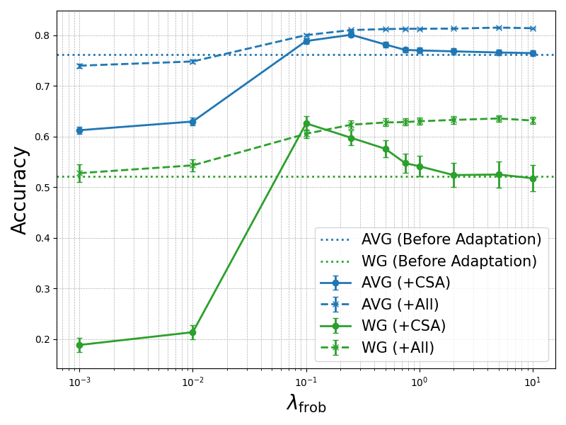
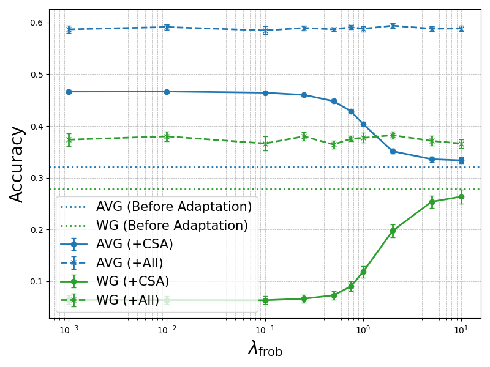
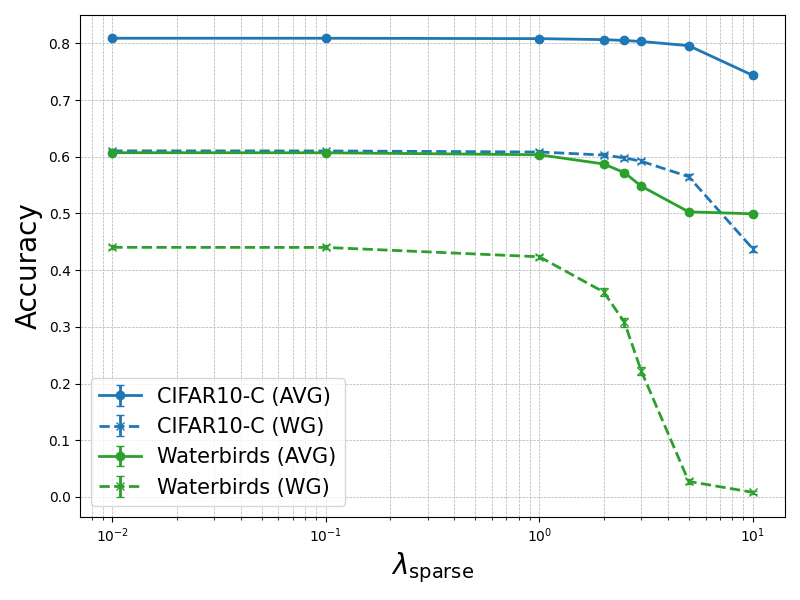
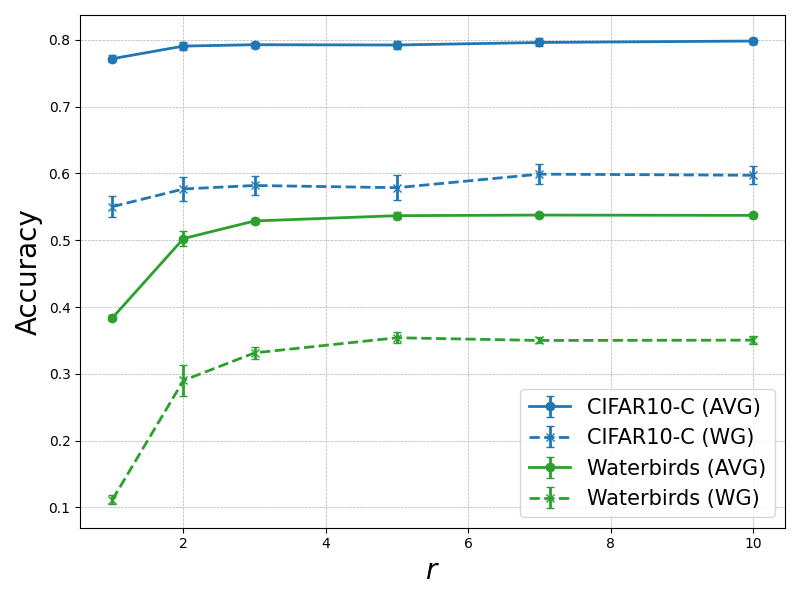
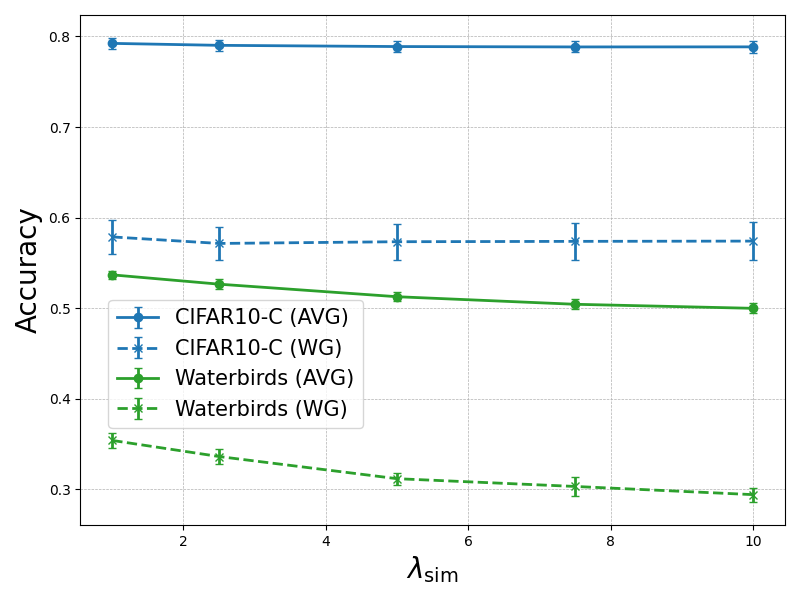
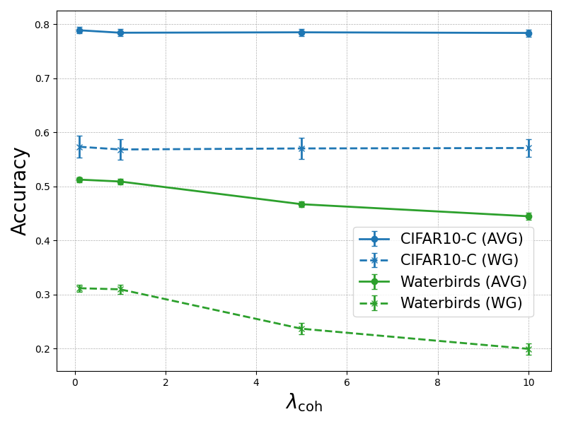
In Figure 5, we present a comprehensive ablation study illustrating how different hyperparameter choices affect the performance of our proposed method.
Most notably, in Figures 5(a) and 5(b), we observe that influences the adaptation performance differently depending on the type of distribution shift (i.e., CIFAR10-C for low-level shifts and Waterbirds for concept-level shifts). Recall that controls how much the concept vectors are allowed to deviate from their original construction during adaptation. When is very low (e.g., ), the weights in the concept bottleneck layer deviate excessively, leading to instability.
In the case of low-level shifts, as shown in Figure 5(a), over-regularizing the Frobenius norm term (e.g., setting as high as ) prevents the method from addressing the non-robustness of the concept bottleneck under such shifts (i.e., the first failure mode in Section 2.3). Selecting a suitable moderate value such as leads to optimal performance.
In contrast, under concept-level shifts depicted in Figure 5(b), allowing deviation of the concept vectors harms performance. By strongly regularizing with a high value (e.g., ), we can nearly preserve the original pre-adaptation performance (note that WG drops to almost zero when ). This occurs because failures of CBMs under concept shifts need to be addressed by adapting the linear probing layer rather than the concept bottleneck layer (the second failure mode in Section 2.3).
However, when all components of CONDA are activated, the adaptation performance becomes quite insensitive to the choice of , regardless of the type of distribution shift, since all the components collaboratively combine to handle all possible failure modes.
Regarding the hyperparameters for the other regularization terms – namely, , , and (Figures 5(c), 5(e), and 5(f)) – we find that the performance is relatively insensitive to their values unless they are set too high, which could override the main optimization objectives.
As for the number of residual concepts , shown in Figure 5(d), we observe that increasing helps improve the performance up to a certain point (specifically, ), after which the performance saturates and additional concepts become redundant. We recommend that a criterion like this be used to select in practice. Choose a high cosine similarity threshold (e.g., 0.9), and stop adding new residual concepts once a new concept vector starts to have maximum cosine similarity (with the existing set of residual concept vectors) larger than the set threshold.
Pseudo-labeling variants. We acknowledge that the performance of CONDA relies on the quality of pseudo-labels. In Section 3, we introduced a simple yet effective approach that ensembles the foundation model’s zero-shot predictions and linear probing predictions, with a focus on matching the CBMs’ post-deployment performance with that of the feature-based predictions. However, more advanced pseudo-labeling techniques could further improve our method’s performance.
Importantly, the pseudo-labeling technique should operate on a batch basis to run alongside CONDA, which performs adaptation with an incoming batch of test data in an online fashion. For this, we employ a recent method from the TTA literature Chen et al. (2022). They employ an online pseudo-labeling refinement scheme that generates significantly more accurate pseudo-labels by using soft -nearest neighbors voting in the target domain’s feature space for each target sample. The neighboring samples are generated by applying weak augmentation to each incoming target sample. The core intuition of their method is that the model should make consistent predictions for these nearest neighbors. We apply this method to the feature-based linear-probing predictions (“Refined LP”) and ensemble it with ZS predictions.
Table 5 compares the performance of CONDA with Post-hoc CBM (Yuksekgonul et al., 2023) when using i) our simple pseudo-labeling approach, ii) pseudo-label refinement by Chen et al. (2022), and iii) perfect pseudo labeling (using the ground-truth labels of the target dataset to provide an empirical upper bound on the performance). We observe that the refined pseudo-labeling of Chen et al. (2022) helps further improve the adaptation performance of CONDA. It is particularly effective with low-level shifts (CIFAR10-C and CIFAR100-C), as the method by Chen et al. (2022) enforces consistent predictions among weakly-augmented instances, which correspond to low-level shifts (e.g., cropping, color jittering, flipping, etc.). However, compared to the performance with perfect pseudo-labeling, there remains a significant performance gap (especially CIFAR-100). Reducing this gap with more advanced pseudo-labeling that can handle both distribution shift types is an important direction for future work.
Dataset Metric {ZS, LP} {ZS, Refined LP} Perfect PL CIFAR10-C AVG 84.38 1.52 90.06 1.94 96.37 0.37 WG 72.69 2.49 76.31 3.01 92.65 0.56 CIFAR100-C AVG 53.88 0.23 61.25 0.29 97.31 0.35 WG 2.56 0.27 10.28 0.27 79.13 1.73 Waterbirds AVG 60.69 0.23 62.77 0.16 95.39 0.21 WG 43.01 0.46 44.30 0.11 92.02 0.42 Metashift AVG 93.69 0.20 94.07 0.11 100.0 WG 92.02 0.12 93.56 0.13 100.0 Camelyon17 AVG 91.20 0.06 93.19 0.10 94.82 0.08 WG 88.96 0.16 90.88 0.15 93.50 0.17
Choice of foundation model. Another factor that inherently affects the performance of CONDA is the choice of the backbone foundation model. While foundation models are usually designed for general-purpose tasks (e.g., BiomedCLIP (Zhang et al., 2023), pretrained on diverse medical domains), they are sometimes fine-tuned for specific domains (e.g., MedCLIP (Wang et al., 2022), specifically pretrained on chest X-rays).
In Table 6, we compare the performance of our proposed adaptation with different CBM baselines on the Camelyon17 dataset, while varying the backbone foundation model. Intuitively, MedCLIP may not be well-suited for pathology data such as Camelyon17, and we observe significant drops in zero-shot (ZS) and linear probing (LP) accuracies in both source and target domains. Consequently, the performance of the CBM based on its embeddings is much worse when a mis-matched foundation model is used. On the other hand, with BioMedCLIP as the foundation model, the source domain performance as well as the adaptation performance of CONDA on the target domain are much better. This confirms that selecting an appropriate backbone leads to better representative embeddings and higher-quality pseudo labels, which in-turn leads to more accurate test-time adaptation.
This suggests another avenue for further improving the adaptation performance beyond advanced pseudo-labeling techniques – for example, zero-shot robustification of the foundation model embeddings (Adila et al., 2024). Such approaches could be employed when the chosen foundation model is not specifically tailored to the given task. We leave this as an important direction for future work.
Backbone ZS LP Yuksekgonul et al. (2023) Yeh et al. (2020) Oikarinen et al. (2023) Unadapted w/ CONDA Unadapted w/ CONDA Unadapted w/ CONDA BiomedCLIP Source AVG 77.71 92.14 0.01 89.07 0.60 - 97.01 0.05 - 94.19 0.11 - WG 69.73 88.89 0.02 84.34 1.39 - 96.31 0.24 - 91.23 0.12 - Target AVG 84.55 93.69 0.01 89.71 0.65 91.20 0.06 95.01 0.07 92.54 0.16 91.75 0.08 93.16 0.05 WG 76.08 89.49 0.02 85.96 0.88 88.96 0.16 93.07 0.37 91.07 0.32 87.24 0.09 89.00 0.07 MedCLIP Source AVG 53.09 79.89 0.05 76.92 0.06 - 94.58 0.10 - 79.15 0.08 - WG 11.75 79.28 0.01 76.21 0.16 - 92.20 0.44 - 78.01 0.15 - Target AVG 48.87 68.37 0.07 67.35 0.12 67.56 0.11 88.72 0.28 86.04 0.19 66.29 0.18 67.05 0.08 WG 14.66 68.32 0.05 62.15 0.19 65.36 0.14 81.42 1.15 81.01 1.65 59.35 0.21 65.17 0.14
Appendix E Additional Interpretability Analysis
In this section, we include additional experiments and analysis to better understand the interpretability of CONDA as well as the utility of the RCB component.
E.1 Residual Concept Bottleneck Compensates for Prediction Errors
Here we aim to understand how including the RCB component in CONDA impacts the predictions of the adapted classifier. We conduct an analysis similar to the one in Appendix B of Yuksekgonul et al. (2023), where they evaluate the impact of the residual predictor PCBM-h and when it alters the predictions of the main predictor PCBM. In Figure 6, we compare the predictions made by (i) PCBM + CSA + LPA (i.e., excluding RCB) with that of (ii) PCBM + CSA + LPA + RCB (i.e., including RCB) on the CIFAR10-C (with Gaussian Noise, Shot Noise, and Impulse Noise) and Metashift datasets. The x-axis shows the confidence of predictions, which are binned into 5 intervals; and y-axis shows both the accuracy of (i) within each confidence bin (blue curve), and the consistency of predictions between (i) and (ii) within each confidence bin (red curve). Consistency is defined as the fraction of samples where the predictions of two models are the same.
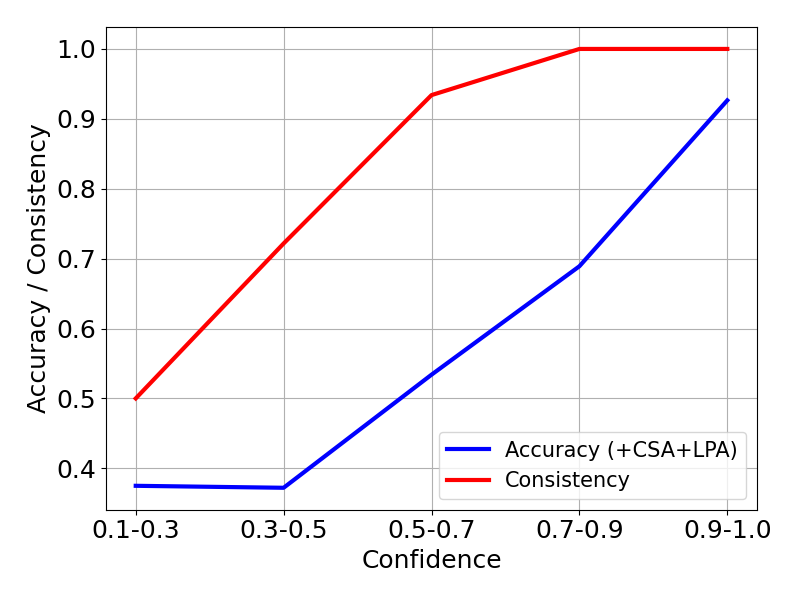
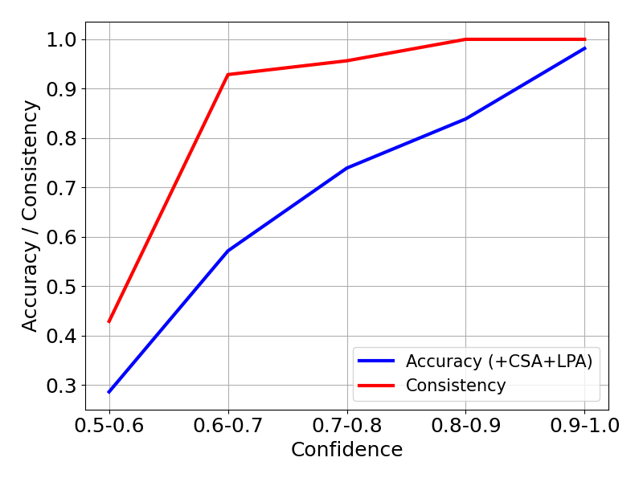
Figures 6(a) and 6(b) show the accuracy/consistency plots for the CIFAR10-C and Metashift datasets respectively. We observe that in both cases, when the confidence is high, the accuracy and consistency are high. As the confidence of predictions decreases, the accuracy and consistency within the confidence bins also decrease sharply. From this, we can infer that the residual component (RCB) modifies the predictions of PCBM + CSA + LPA mostly when they are incorrect and have low confidence. This is readily apparent in the case of Metashift which addresses binary classification, since all the inconsistent predictions where PCBM + CSA + LPA is incorrect have to be correct when RCB is included. Thus, we hypothesize that RCB has the effect of intervening to compensate mainly when the prior adaptation components (CSA + LPA) have prediction errors or low confidence.
We also summarize the test accuracies of the CONDA variants (i) and (ii) on Metashift and CIFAR10-C in Table 7. We observe that including RCB (variant ii) leads to a small increase in both the AVG and WG accuracies.
Dataset CONDA variant Accuracy (AVG) Accuracy (WG) Metashift PCBM + CSA + LPA 93.96 91.61 PCBM + CSA + LPA + RCB 94.57 93.25 CIFAR10-C PCBM + CSA + LPA 81.89 64.63 PCBM + CSA + LPA + RCB 82.27 66.54
E.2 Accuracy-Interpretability Tradeoff in Residual Concept Bottleneck
In this sub-section, we aim to answer to the following question: while the residual concept bottleneck improves the adaptability of CONDA, does it potentially affect the interpretability by introducing additional model complexity? An analysis of the trade-off between model complexity and interpretability, particularly as new residual concepts are added, would be valuable for practitioners seeking interpretable yet robust models.
Here we apply our adaptation to PCBM (CLIP), where each concept vector is constructed using CLIP text embeddings of concept captions, deployed to the Waterbirds dataset. As discussed in Appendix B.2, for concept annotation, we leveraged the ConceptNet hierarchy following the setup in Yuksekgonul et al. (2023). We searched ConceptNet for the words “Bird”, “Water”, “Land” and obtained concepts that have the following relationship with the query concept: hasA, isA, partOf, HasProperty, and MadeOf.
We compare the two CONDA variants (i) PCBM + CSA + LPA and (ii) PCBM + CSA + LPA + RCB by varying the number of residual concepts () and evaluating the following metrics:
-
–
Relative accuracy of method (ii) minus (i), both for AVG and WG.
- –
The similarity score is used as a quantitative metric to measure the interpretability of RCB. To be more specific, the score in Eqn. 18 tells us how aligned the assigned concept caption is with each residual concept vector. A low score implies that the assigned caption is not a good description for the concept.
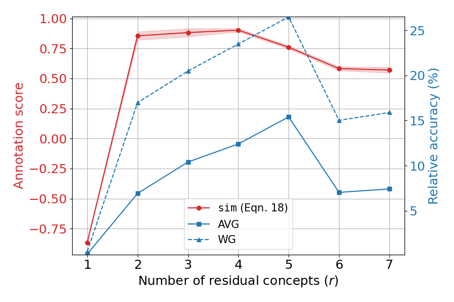
Figure 7 shows the relative accuracy and similarity score as a function of the number of residual concepts (as they are added incrementally). We observe that choosing would result in the best relative accuracy, but it leads to a drop in the similarity score which peaks at (implying a drop in interpretability of the residual concept). A practitioner can choose a suitable stopping point for the residual concepts by monitoring these two criteria as shown in the figure.
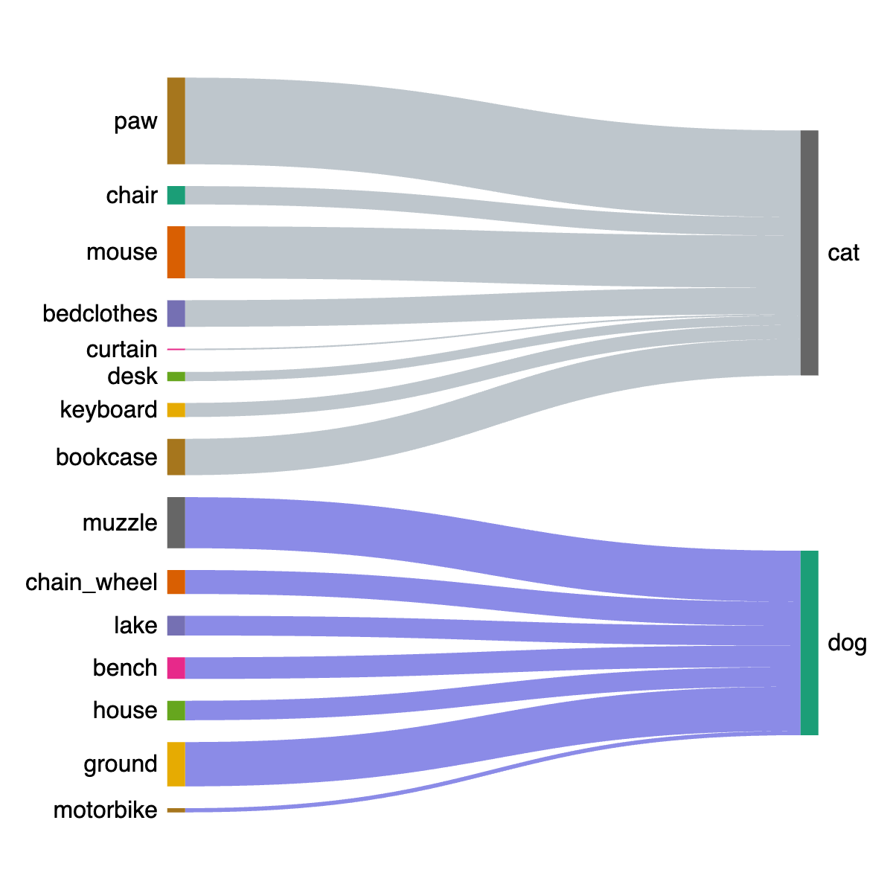
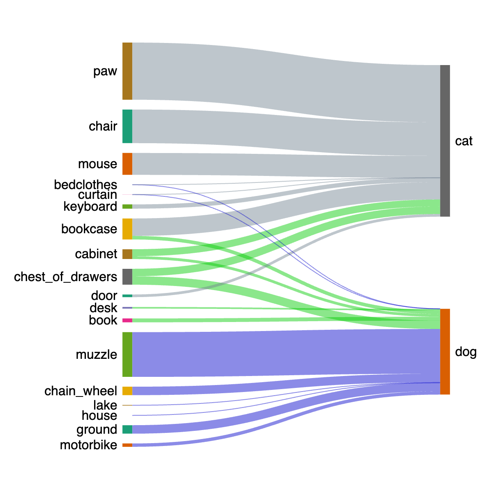
E.3 Additional Interpretability Results
In Figure 8, we present another example demonstrating how CONDA adapts interpretations on the MetaShift dataset, similar to Figure 4. In the source domain, cat images are exclusively correlated with sofa or bed objects, whereas dog images are always associated with bench or bike objects. In the target domain, however, both cat and dog images appear with a shelf background.
Without any adaptation, the deployed CBM indicates that the most contributing concepts to the “cat” class are mainly household-related objects (see Figure 8(a)), and these concepts do not positively contribute to the “dog” class at all. After applying our adaptation (Figure 8(b)), the influence of the bed-related concepts is diminished, while shelf-related concepts (highlighted in bright green) begin to contribute to the prediction of both the “cat” and “dog” classes.
Appendix F Limitations and Future Work
We acknowledge that the effectiveness of our framework is limited by the inherent robustness of the backbone foundation model, especially due to its reliance on pseudo-labeling. Specifically, when the backbone foundation model remains robust (e.g., against low-level shifts with lower severity level or concept-level shifts), concept-based predictions can be adjusted to be more robust than feature-based predictions through adaptation (e.g., see Metashift results in Table 1). However, when the backbone foundation model is not robust (e.g., against low-level shifts with higher severity level), the CBM adaptation, which relies on the pseudo-labels of the foundation model (feature representations), cannot be guided to a successful solution and could lead to reduced performance; see results in Table 8.
Dataset ZS LP Yuksekgonul et al. (2023) Yeh et al. (2020) w/o adaptation + CSA + LPA + CSA + LPA w/o adaptation + CSA + LPA + CSA + LPA Metashift Source AVG 0.957 0.972 0.979 0.001 - - - 0.972 0.001 - - - WG 0.934 0.960 0.969 0.003 - - - 0.960 0.001 - - - Target AVG 0.705 0.835 0.890 0.006 0.620 0.049 0.713 0.005 0.676 0.009 0.840 0.009 0.834 0.009 0.749 0.008 0.690 0.005 WG 0.460 0.720 0.850 0.013 0.279 0.110 0.476 0.017 0.398 0.018 0.712 0.018 0.700 0.020 0.512 0.016 0.400 0.010
Moreover, in Table 1, we note that there are instances where our adaptation did not yield improvements with the CBM method of Yeh et al. (2020). In cases such as the CIFAR datasets and Camelyon17, the unadapted CBM already outperforms ZS or LP in the target domain, and adaptation using pseudo-labels produced by these methods can negatively impact the performance. This is likely because the concept learning algorithm in Yeh et al. (2020) is designed to optimize accuracy, with the concept bottleneck layer serving as an additional layer that can be optimized along with the subsequent LP layer. However, a caveat of this approach is that the interpretability of the concept bottleneck is not guaranteed, whereas methods such as Yuksekgonul et al. (2023) and Oikarinen et al. (2023) provide clear textual annotations for concepts, enhancing the interpretability.
As hinted in Appendix D, future work could involve employing more advanced pseudo-labeling techniques as well as robustifying the foundation model itself. Despite these limitations, we believe our work is an important first step toward leveraging off-the-shelf foundation models in an interpretable decision-making process, while preserving the post-deployment utility. Our framework stands to benefit further from the rapid advancements in foundation models.